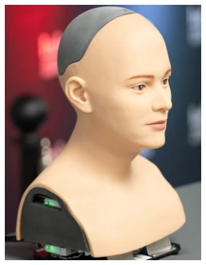
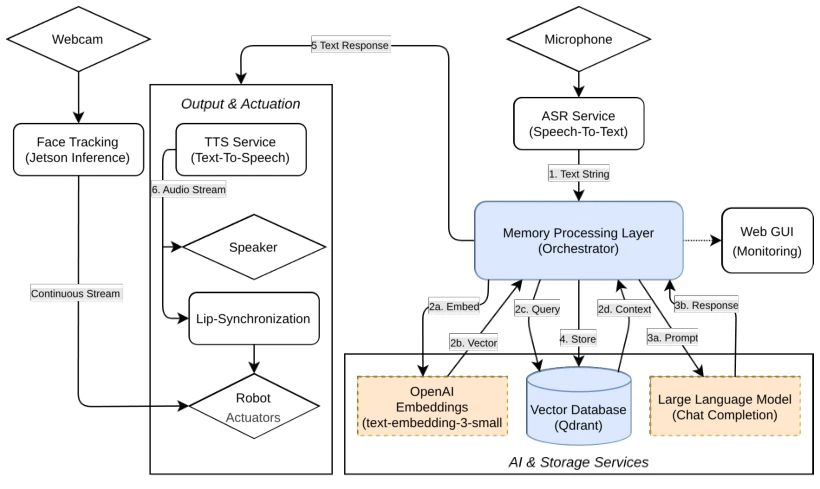

系统基于 Kim 机器人头，微服务架构。ASR 转录后进入记忆模块。记忆模块用 Qdrant 存向量，OpenAI Embedding 编码。关键创新是混合检索打分：余弦相似度 + 记忆强度（时间衰减、访问频率、情感强度）。情感用 Russell 模型标注。Prompt 限制记忆使用自然。存储异步，检索同步。具体而言，记忆强度 S(m) 结合了创建时间、访问次数和最后访问时间，并乘以情感强度因子，确保高情感记忆更持久。检索时先过余弦相似度，再重排序。LLM 接收上下文时，被要求自然使用记忆，避免生硬插入。整个流程通过 Docker 容器化，确保模块解耦。权重设置上，时间衰减权重最高，强调近期记忆。情感强度作为乘法因子，让高情绪事件更抗衰减。这种设计旨在平衡语义相关性与社交重要性，防止无关信息干扰对话流畅性。
—

Fig. 1. Humanoid robot head Kim that has been used in this study

Fig. 2. High-level system architecture. User speech is transcribed, enriched with retrieved episodic context, and passed to the LLM. Storage of new memories runs concurrently in a background thread.
Fig. 3. HRIES subscale scores by condition (N = 43). Only Sociability exhibits a visible distributional shift between Baseline (left) and Memory-Enhanced (right). The remaining subscales show largely overlapping distributions.